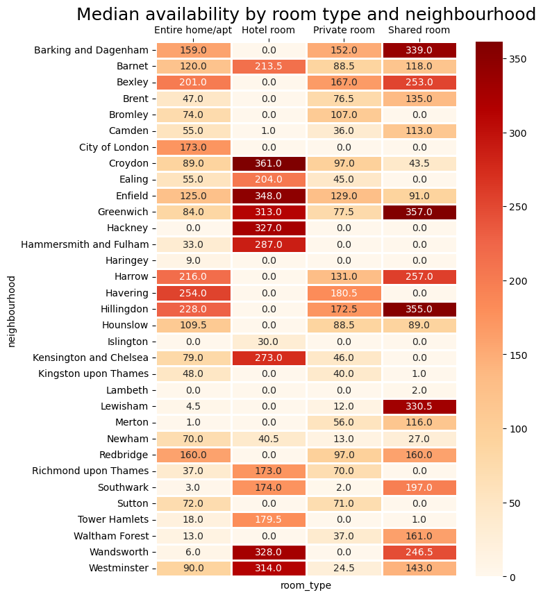

Neighbourhood related data
The bubble chart represents the median daily cost and count of accommodations in each neighbourhood. When hoovering over each bubble, we can see:
- Neighbourhood name
- Median price a night
- Amount of listings
- City of London
- Westminster
- Kensington and Chelsea
- Camden and Hammersmith
- Fulham
If you're planning a last minute trip, this summary table can be useful. Showing the median availability of the different room types by neighbourhood during the year 2022. Zeros in Hotel room category can be explained by the fact that there are no listings in many neighbourhoods. In two popular and expensive neighbourhoods: Westminster & Kensington and Chelsea only Hotel rooms seem to be available most of the year.
